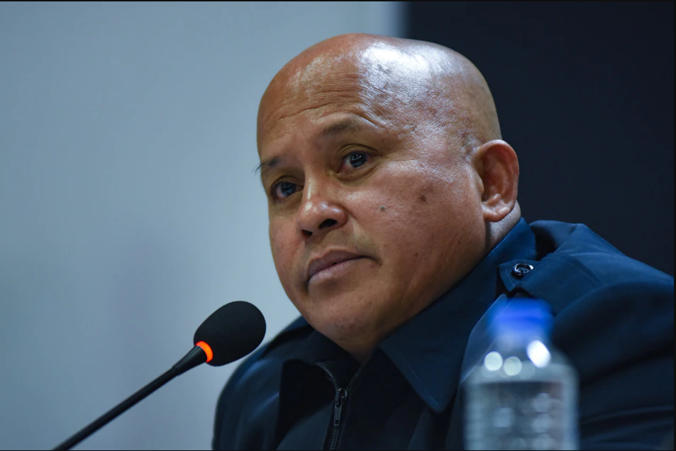

Bato supports drug tests for #Halalan2022 candidates
ABS-CBN News | Posted at Oct 27 2021 05:33 AM
MANILA - Presidential candidate Sen. Ronald "Bato" dela Rosa said he is willing to undergo a drug test should it be required for candidates in the 2022 elections.
Dela Rosa, a former Philippine police chief, said it is only right that candidates undergo the said screening, since security guards are required to do the same.
"Yes, dapat lang kasi yung security guard nga na iisang establisimiyento lamang ang binabantayan ay nire-require natin ng drug test, how about much more yung presidente na buong bansa ang binabantayan at buong bansa ang pinamumunuan," he explained in a video.
(Security guards undergo the same screening for drug tests, how much more if you are running for president, where you guard the whole country)
"So unfair 'no kung hindi pareho ang pag-treat natin sa dalawang klaseng posisyon na yan, so dapat magpa-drug test talaga," he pointed out.
(It is unfair if we don't treat the two the same under the standard, so there should be a drug test)
The lawmaker also backs medical tests for the candidates.
"Ideally, maganda talaga dapat yan kasi in order to determine the fitness of the candidates to the position that we are vying for. Dapat yan ganoon talaga," he added.
(That is ideal to determine the fitness of the candidates who are vying for that position. That should be the case.)
Vice President Leni Robredo earlier said she was "okay" with the call for 2022 candidates to undergo drug testing.